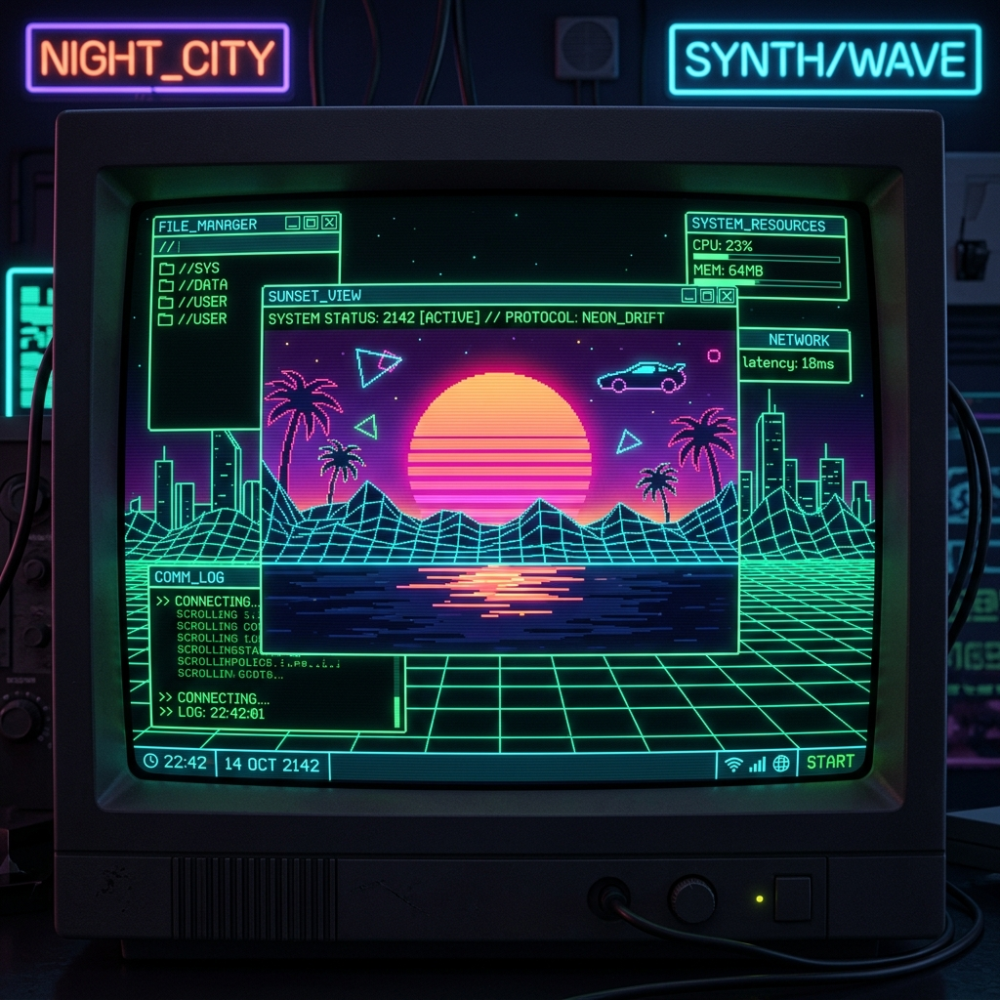

<title>CYBER-RETRO v2.0 // Home Terminal</title>
<link rel="stylesheet" href="style.css">
<script src="app.js"></script>
<header class="retro-header">
<a class="brand-logo" href="index.html">SYS://CYBER_RETRO</a>
<nav>
<ul class="nav-links">
<li>
<a class="nav-link active" href="index.html">01.HOME</a>
</li>
<li>
<a class="nav-link" href="about.html">02.ABOUT</a>
</li>
<li>
<a class="nav-link" href="gallery.html">03.GALLERY</a>
</li>
<li>
<a class="nav-link" href="guestbook.html">04.GUESTBOOK</a>
</li>
</ul>
</nav>
<div class="retro-controls">
<button id=""btnToggleCrt"" class="btn-retro">[CRT: ON/OFF]</button>
</div>
</header>
<main class="container">
<div class="hero-grid">
<div class="terminal-card">
<div class="terminal-header">
<span class="dot dot-red">
</span>
<span class="dot dot-yellow">
</span>
<span class="dot dot-green">
</span>
<span>  terminal_v2.0.sh</span>
</span>
</div>
<h1 class="hero-title">MINIMALIST RETRO TERMINAL</h1>
<p class="hero-subtitle">> Empowering natural English multi-target transpilation into HTML5, CSS3 & ES6+ JavaScript.</p>
<canvas id="matrixCanvas">
</canvas>
<div class="retro-controls">
<a class="btn-retro" href="gallery.html">EXPLORE GALLERY ></a>
<a class="btn-retro" href="guestbook.html">SIGN GUESTBOOK ></a>
</div>
</div>
<div>

</div>
</div>
<div class="cards-grid">
<div class="feature-card">
<div class="card-icon">⚡</div>
</div>
<h3 class="card-title">.ENLGF MARKUP</h3>
<p class="card-desc">Semantic HTML5 structural transpilation from pure natural English statements.</p>
</div>
<div class="feature-card">
<div class="card-icon">🎨</div>
</div>
<h3 class="card-title">.ENLGD STYLING</h3>
<p class="card-desc">CSS3 design system with neon CRT glows, scanlines, and responsive glassmorphism.</p>
</div>
<div class="feature-card">
<div class="card-icon">💻</div>
</div>
<h3 class="card-title">.ENLGS SCRIPTING</h3>
<p class="card-desc">Client-side DOM interactivity, audio synthesis, and LocalStorage state machine.</p>
</div>
</div>
</main>
<footer class="retro-footer">
<p>SYSTEM STATUS: 100% OPERATIONAL // BUILT WITH ENLANG v2.0 // SPANDAN PRAYAS PATRA © 2026</p>
</footer>
